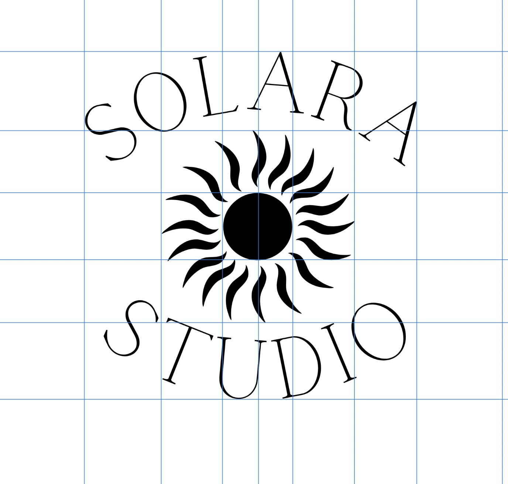
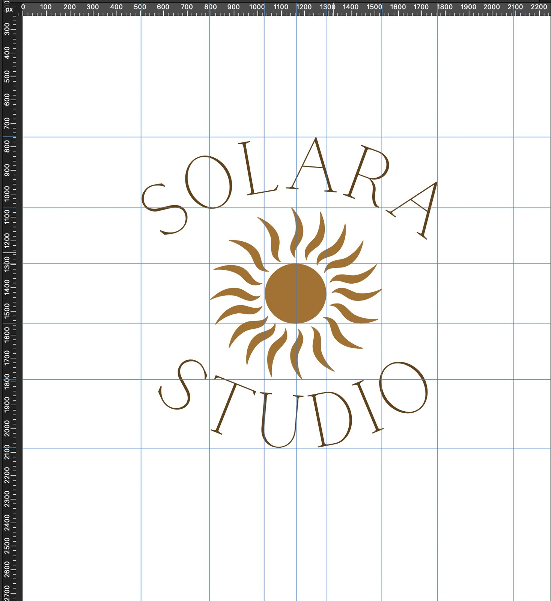
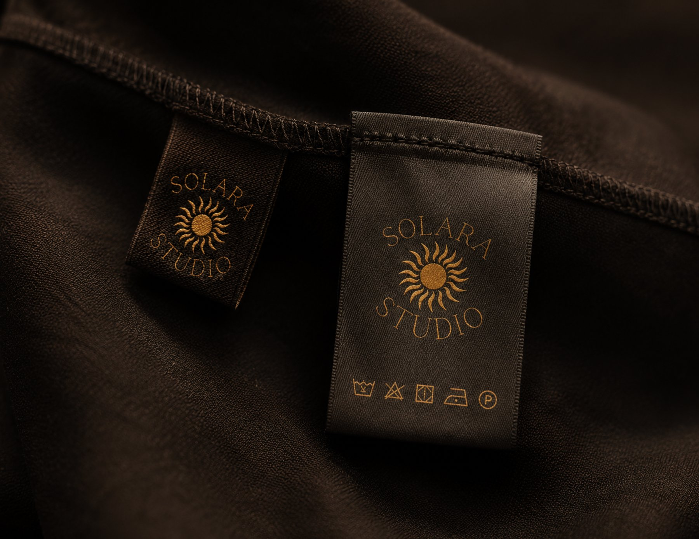
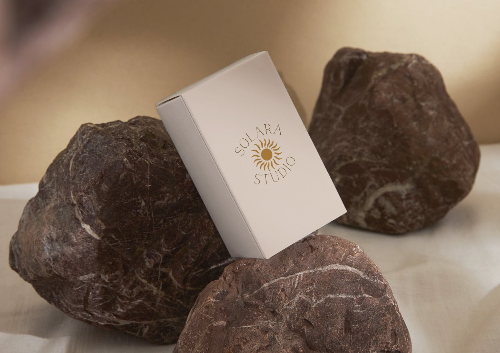

Solara Studio
Creative Studio, Circular Mark
See the Solara brand workSolara Studio is a creative studio whose name references the sun. The logo is a circular mark with the brand name arcing around the top, the word Studio arcing around the bottom, and a stylised sun at the centre.
Circular logos tend to feel calm and complete to most people. Circles read as complete, unified and continuous. They have no hard edges to create tension, which makes them feel approachable. For a creative studio that wants to feel established and trustworthy rather than edgy, a circular mark was the right structural choice.
Radial symmetry, where elements are arranged equally around a central point, is one of the most calming visual structures that exists. We see it in flowers, sunbursts, architecture and nature constantly, and most people find it satisfying to look at. The Solara mark uses it deliberately: the type and the sun rays all radiate from the same centre point, which gives the whole thing a sense of natural order.
The rays are not perfectly uniform. They vary slightly in curve and length, which is intentional. A perfectly geometric sun looks mechanical and generated. Slightly organic rays look drawn, which signals craft. People are often good at sensing the difference between something made by hand and something produced by a machine, even when they can't say why. The irregularity is the detail that makes the mark feel handmade.
Setting lettering on a circular path sounds straightforward but it requires careful manual kerning at every letter pair. When letters are placed on a curve, the gaps between them change visually because the baseline is no longer horizontal. Letters that look correctly spaced in a straight line often crowd or gap unevenly on a circle. Every pair was checked individually and adjusted until the spacing felt even all the way around.
Grid check and colour application

Why optical centre is not the same as mathematical centre
The guidelines here are checking that the sun mark sits at the true visual centre of the composition, which isn't always the mathematical centre of the artboard. These are often different. Heavy elements, like the dense centre of the sun mark, appear to sit lower than they are, which means they need to be nudged slightly upward to feel centred.
The grid also confirms that SOLARA and STUDIO are arcing at exactly the same radius. If one of them sat even slightly closer or further from the sun mark, the whole composition would feel lopsided. At small sizes this kind of misalignment reads as an unpolished logo. At large sizes on signage or packaging it becomes very obvious. Getting it confirmed at this stage prevents problems later.
Working in black and white at the alignment stage is also deliberate. Colour adds information that can distract from structural problems. A mark that looks balanced in monochrome will look balanced in colour. A mark that only looks balanced in colour has a structural problem that colour is masking.
Affinity Designer
Why warm gold was the right colour for this mark and what it communicates without saying anything
The warm golden amber sits between brown and orange on the colour spectrum. Gold is widely associated with quality, warmth, success and longevity, largely because the metal has been used as a symbol of value in so many cultures for so long, and the colour carries some of that with it.
For a creative studio, gold communicates that the work is high quality and the studio is established. It does this without any words. That is what colour does when it is chosen correctly: it does communication work that copy cannot.
The tone of gold matters too. A bright metallic gold would feel corporate and cold. This amber-gold is warm, which keeps the mark feeling approachable and creative rather than formal. The warmth also suits the sun reference, because sunlight is warm light.
Brand colour
